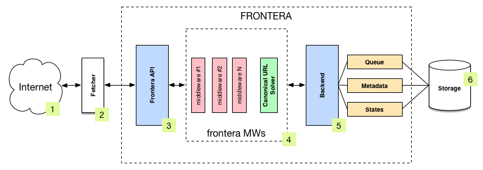
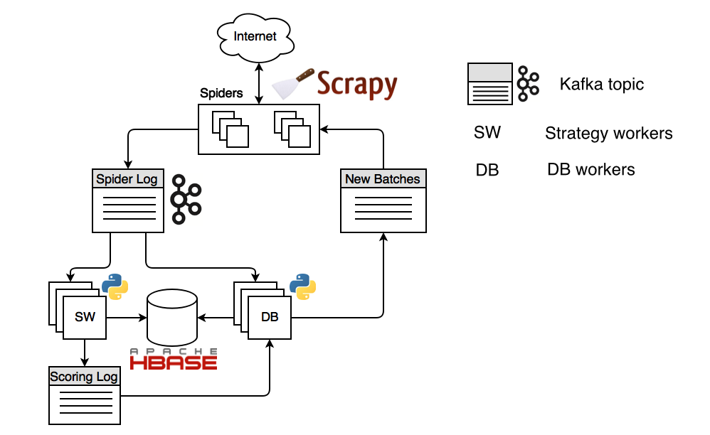

Architecture overview¶
This document describes the new_frontera Manager pipeline, distributed components and how they interact.
Single process¶
The following diagram shows an architecture of the new_frontera pipeline with its components (referenced by numbers) and an outline of the data flow that takes place inside the system. A brief description of the components is included below with links for more detailed information about them. The data flow is also described below.
{kind=link}
Components¶
Fetcher¶
The Fetcher (2) is responsible for fetching web pages from the sites (1) and feeding them to the frontier which manages what pages should be crawled next.
Fetcher can be implemented using Scrapy or any other crawling framework/system as the framework offers a generic frontier functionality.
In distributed run mode Fetcher is replaced with message bus producer from new_frontera Manager side and consumer from Fetcher side.
new_frontera API / Manager¶
The main entry point to new_frontera API (3) is the FrontierManager object.
Frontier users, in our case the Fetcher (2), will communicate with the frontier through it.
For more information see new_frontera API.
Middlewares¶
Frontier middlewares (4) are specific hooks that sit between the Manager (3) and the Backend (5). These middlewares
process Request and Response
objects when they pass to and from the Frontier and the Backend. They provide a convenient mechanism for extending
functionality by plugging custom code. Canonical URL solver is a specific case of middleware responsible for
substituting non-canonical document URLs wiht canonical ones.
For more information see Middlewares and Canonical URL Solver
Backend¶
The frontier Backend (5) is where the crawling logic/policies lies. It’s responsible for receiving all the crawl info
and selecting the next pages to be crawled. Backend is meant to be operating on higher level, and
Queue, Metadata and
States objects are responsible for low-level storage communication code.
May require, depending on the logic implemented, a persistent storage (6) to manage
Request and Response
objects info.
For more information see Backends.
Data Flow¶
The data flow in new_frontera is controlled by the Frontier Manager, all data passes through the manager-middlewares-backend scheme and goes like this:
The frontier is initialized with a list of seed requests (seed URLs) as entry point for the crawl.
The fetcher asks for a list of requests to crawl.
Each url is fetched and the frontier is notified back of the crawl result as well of the extracted data the page contains. If anything went wrong during the crawl, the frontier is also informed of it.
Once all urls have been crawled, steps 2-3 are repeated until crawl of frontier end condition is reached. Each loop (steps 2-3) repetition is called a frontier iteration.
Distributed¶
The same new_frontera Manager pipeline is used in all new_frontera processes when running in distributed mode.
Overall system forms a closed circle and all the components are working as daemons in infinite cycles. There is a message bus responsible for transmitting messages between components, persistent storage and fetchers (when combined with extraction these processes called spiders). There is a transport and storage layer abstractions, so one can plug it’s own transport. Distributed backend run mode has instances of three types:
- Spiders or fetchers, implemented using Scrapy (sharded).
Responsible for resolving DNS queries, getting content from the Internet and doing link (or other data) extraction from content.
- Strategy workers (sharded).
Run the crawling strategy code: scoring the links, deciding if link needs to be scheduled and when to stop crawling.
- DB workers (sharded).
Store all the metadata, including scores and content, and generating new batches for downloading by spiders.
Where sharded means component consumes messages of assigned partition only, e.g. processes certain share of the stream, and replicated is when components consume stream regardless of partitioning.
Such design allows to operate online. Crawling strategy can be changed without having to stop the crawl. Also crawling strategy can be implemented as a separate module; containing logic for checking the crawling stopping condition, URL ordering, and scoring model.
new_frontera is polite to web hosts by design and each host is downloaded by no more than one spider process. This is achieved by stream partitioning.
Data flow¶
Let’s start with spiders. The seed URLs defined by the user inside spiders are propagated to strategy workers and DB workers by means of spider log stream. Strategy workers decide which pages to crawl using state cache, assigns a score to each page and sends the results to the scoring log stream.
DB Worker stores all kinds of metadata, including content and scores. Also DB worker checks for the spider’s consumers offsets and generates new batches if needed and sends them to spider feed stream. Spiders consume these batches, downloading each page and extracting links from them. The links are then sent to the ‘Spider Log’ stream where they are stored and scored. That way the flow repeats indefinitely.